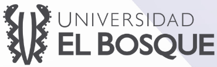
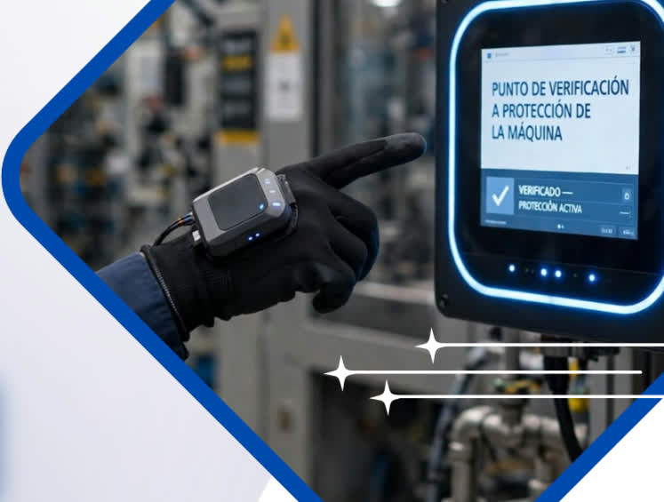
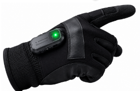
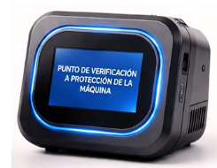
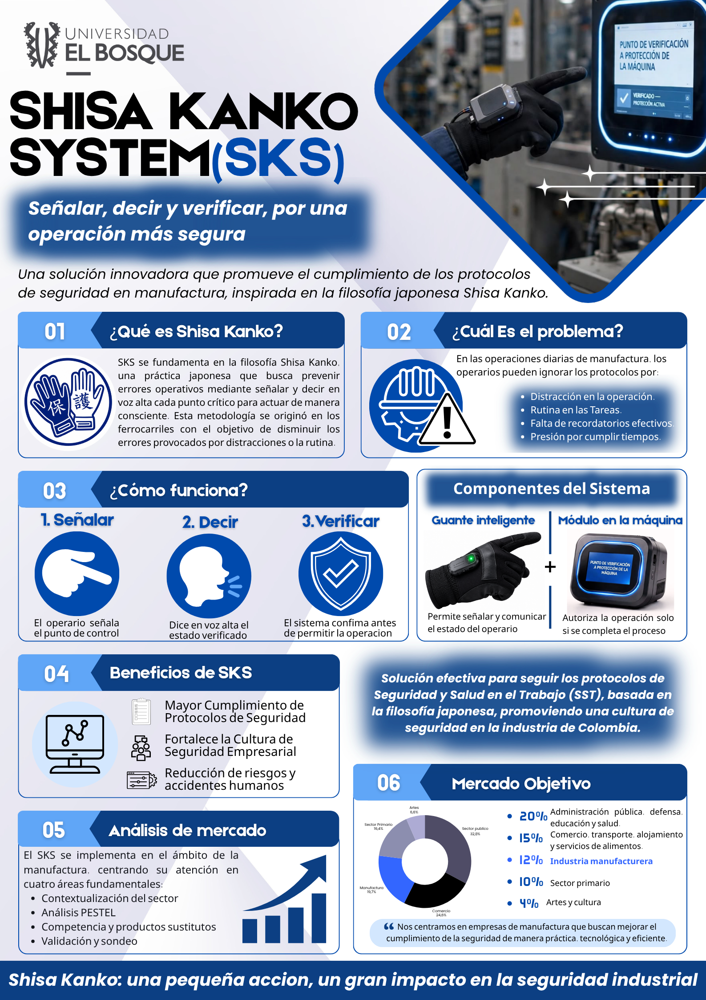

Una solución innovadora que promueve el cumplimiento de los protocolos de seguridad en manufactura, inspirada en la filosofía japonesa Shisa Kanko.

SKS se fundamenta en Shisa Kanko, una práctica japonesa que busca prevenir errores operativos mediante señalar y decir en voz alta cada punto crítico, para actuar de manera consciente.
Shisa Kanko (指差喚呼) significa literalmente “señalar y llamar”. Es un método de trabajo que convierte una revisión mental, fácil de olvidar, en una acción física y verbal: la persona mira el elemento, lo señala con el dedo, dice en voz alta su estado (“¡señal en verde!”, “¡guarda puesta!”) y escucha su propia confirmación.
Al combinar vista, movimiento, voz y oído, el cerebro sale del “piloto automático”. Esto reduce los errores causados por distracciones, fatiga o la rutina de repetir la misma tarea cientos de veces al día.
La metodología se originó en los ferrocarriles japoneses a comienzos del siglo XX, donde maquinistas y personal de estación señalaban y anunciaban cada señal, horario y puerta. Hoy se aplica en metros, aeropuertos, plantas industriales, hospitales y obras de construcción de todo Japón.
menos errores al señalar y decir en voz alta, frente a realizar la misma tarea sin hacerlo.
Estudio del Instituto de Investigación Técnica Ferroviaria de Japón (RTRI), 1994.Maquinistas de los ferrocarriles japoneses empiezan a señalar y anunciar las señales de la vía.
La práctica se vuelve norma en trenes y metros, y pasa a la industria como herramienta de seguridad.
Estudios del RTRI demuestran científicamente la reducción de errores.
Llevamos Shisa Kanko a la manufactura colombiana con tecnología que verifica cada paso.
En las operaciones diarias de manufactura, los operarios pueden ignorar los protocolos de seguridad por:
La mayoría de accidentes con máquinas no ocurre por desconocer la norma, sino por saltarse un paso que “siempre se hace”. Shisa Kanko ataca justo ese momento.
El operario señala el punto de control con el guante inteligente.
Dice en voz alta el estado verificado, por ejemplo: «Prender máquina».
El sistema confirma ambas acciones antes de permitir la operación.

Permite señalar el punto de control (mediante un haz láser) y comunicar el estado del operario.

Recibe la señal y la voz, y autoriza la operación solo si se completa el proceso.
Estas simulaciones muestran cómo el sistema obliga a cumplir los tres pasos: si falta alguno, la máquina permanece bloqueada.
El operario se acerca a la sierra. Si solo dice «Prender máquina» o solo apunta el láser, la operación queda bloqueada. Únicamente cuando apunta y dice la frase a la vez, la luz se pone verde y la sierra arranca.
Detalle del funcionamiento técnico: el guante emite un haz láser que el operario dirige al receptor instalado en la máquina. El módulo detecta el punto señalado como primer paso de la verificación.
Cada paso crítico queda verificado antes de operar la máquina.
Convierte la seguridad en un hábito visible y compartido por todo el equipo.
Disminuye los errores por distracción, rutina o presión de tiempo.
El SKS se implementa en el ámbito de la manufactura, centrando su atención en cuatro áreas fundamentales:

Proyecto de emprendimiento desarrollado en la Universidad El Bosque. Haz clic en la imagen para verla en grande o descárgala.
⬇ Descargar póster